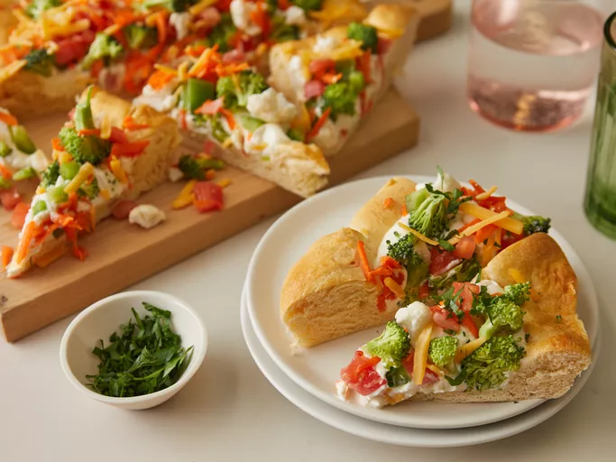

back home
Injera Recipe
Lasagna Recipe
Vegetable Recipe

Ingredients
- 1 pizza dough (store‑bought or homemade)
- ½–¾ cup pizza sauce
- 2–3 cups shredded mozzarella
- Mixed veggies: bell pepper, red onion, mushrooms, olives, cherry tomatoes
- 1–2 tbsp olive oil, Italian seasoning, salt & pepper
Instructions
- Preheat oven to 475°F (245°C) with a stone or sheet inside. Prep veggies in thin slices.
- Stretch dough on parchment; brush lightly with olive oil. Spread sauce evenly.
- Top with mozzarella, then arrange vegetables. Season with Italian herbs, salt, and pepper.
- Bake 10–14 minutes until crust is golden and cheese is bubbling. Rest 2–3 minutes, slice, and serve.